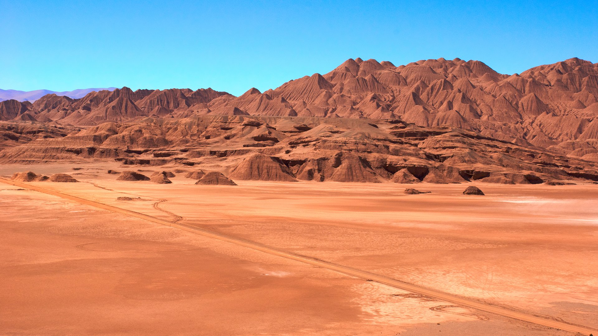

ARGENTINA

Perito Moreno
Texto de información sobre la imágen.

Monte Fitz Roy
Texto de información sobre la imágen.

Mar del Plata
Texto de información sobre la imágen.

Desierto del Diablo
Texto de información sobre la imágen.
Puerto Madryn
Texto de información sobre la imágen.